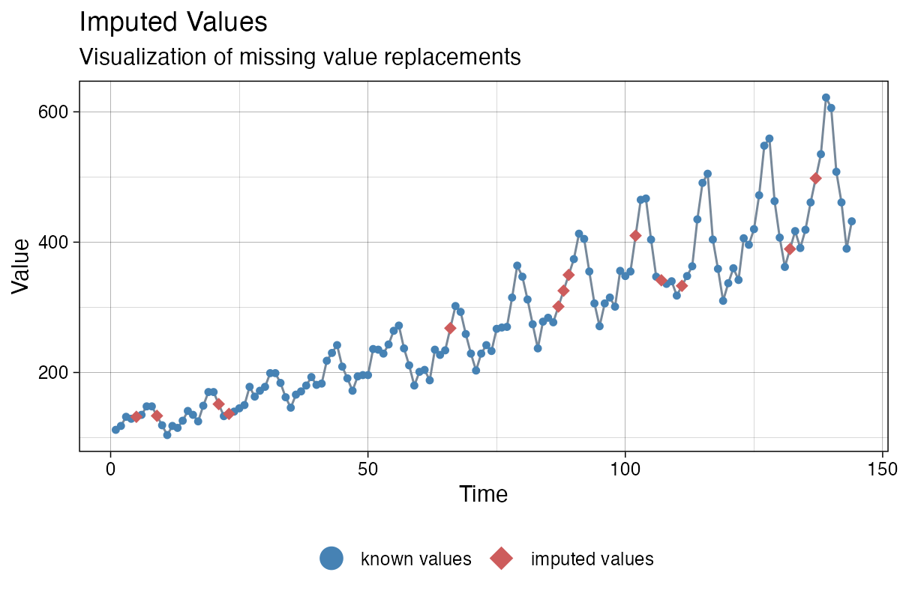

Gallery: Times Series Missing Data Visualizations
Steffen Moritz
2021-12-29
Source:vignettes/gallery_visualizations.Rmd
gallery_visualizations.RmdThere are multiple different plots for (univarate) time series missing data available in the imputeTS package. These can be grouped in the following three categories:
- Getting an Overview (
ggplot_na_distribution) - Deeper insights and missing data patterns (
ggplot_na_distribution2,ggplot_na_gapsize) - Assessing/Exploring imputation results (
ggplot_na_imputations)
This vignette showcases all of the available visualizations in the imputeTS package. More information on time series imputation and the imputeTS package in general can be found in this paper: imputeTS: Time Series Missing Value Imputation in R.
Getting a first overview (ggplot_na_distribution)
The best starting point for getting an overview about the missing data in your (univariate) time series is the ggplot_na_distribution() plot. It gives a nice first overview where in the time series the missing values occur and how they are distributed. It also already gives a rough impression on how many missing data are in different intervals of the time series.
Usage is easy: just supply the (univariate) time series to the function call. Only the time series is needed as input - all additional parameters are only needed to alter the appearance of the plot.
library("imputeTS")
ggplot_na_distribution(tsAirgap)It is important to note, that the input itself needs to be univariate. For data types with multiple variables/columns only use the column you want to plot as input parameter x. The x-axis time information can be added with the x_axis_labels parameter - otherwise the consecutive index of observations in the series is used as x-axis tick label.
Thus for a data.frame df with multiple columns df$date, df$value, df$another_value, df$yet_another_value where we want to plot df$value with Dates on the x-axis the required function call would look like this:
ggplot_na_distribution(x = df$value, x_axis_labels = df$date)
Detailed information about certain intervals (ggplot_na_distribution2)
When a summary for certain time intervals (e. g. weeks) is needed, the ggplot_na_distribution2() plot is useful. It shows the missing data percentage for each interval as a bar. This kind of summary plot is also quite useful for very long time series, which would not fit into the plot window as a lineplot.
Like for ggplot_na_distribution() only parameter x (the univariate time series) is mandatory for creating a plot with ggplot_na_distribution2(). With the parameter interval_size the size of the interval can be changed (default is a auto calculated interval size that gives a good overall overview). All other parameters are mostly needed for changing the appearance of the plot.
ggplot_na_distribution2(tsNH4)Alternatively the missing data count for the interval (instead of the percentages) can be shown. Below is an example with a custom interval size of 144 and a custom color for the missing data bars. Since the example data is recorded in 10 minute time steps, a interval_size of 144 means that we are using daily intervals (6 measurements per hour, 24 hours per day, 6*24 = 144).
ggplot_na_distribution2(tsNH4, measure = "count", interval_size = 144, color_missing = "gold3")
Insights about missing data patterns (ggplot_na_gapsize)
Often deeper insights about the missing data are quite useful. These insights can give hints of possible causes of the missing data and an indication, which imputation algorithms might give good results. The plot gives an overview about how often different gapsizes (NAs in a row) occur in the time series.
Only the parameter x (the univariate time series) is needed as mandatory input. By default the plot shows only the 10 most often occuring gapsizes. Use parameter limit to increase this number.
library(imputeTS)
ggplot_na_gapsize(tsNH4)The plot shows both, the number of occurrence and the resulting NAs for the respective gapsizes. Resulting NAs can be explained as the number of NAs a certain gapsize accounts for in total. For example a gapsize of 3 that occurs 5 times results in 15 NAs overall. The parameter include_total can be used to change this behavior. Below is a example of the same plot with specific settings for limit and include_total.
library(imputeTS)
ggplot_na_gapsize(tsNH4, include_total = F, limit = 15)
Evaluate imputation results (ggplot_na_imputations)
After using imputation functions like na_kalman(), na_interpolation(), na_seadec() there is often the need to get a first impression on how good the algorithm performs. The ggplot_na_imputations() plot gives a good impression on how well the imputed values fit into the original time series.
Mandatory inputs for this function are these two parameters: x_with_na (the time series as it was before imputation) and x_with_imputations (the time series without NAs after imputation).
library(imputeTS)
imp <- na_interpolation(tsAirgap)
ggplot_na_imputations(tsAirgap, imp)
In some cases (mostly when performing imputation experiments and benchmarks) the NAs were only artificially introduced into the original time series. Which means, there exists a ground truth for the NA values (the complete time series before introducing the NAs). In this case you can additionally use the x_with_truth parameter to get a plot that displays both, the imputations and the ground truth.
library(imputeTS)
imp <- na_mean(tsAirgap)
ggplot_na_imputations(x_with_na = tsAirgap, x_with_imputations = imp, x_with_truth = tsAirgapComplete )